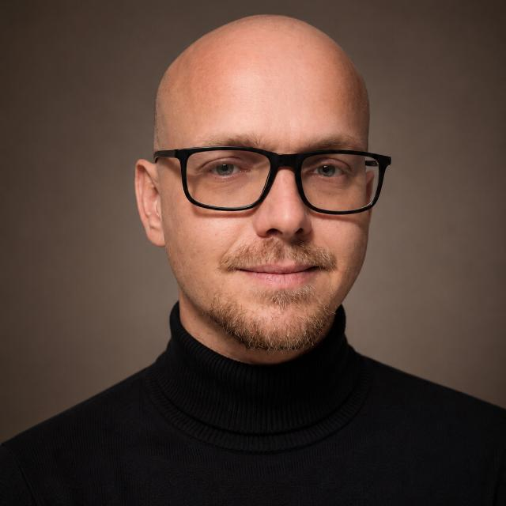

DER MENSCH HINTER DEM CODE
Dirk Rößler ✳
Berlin / Germany
Fachinformatiker
Anwendungsentwicklung
MEINE STATIONENElektrobildungs- und Technologiezentrum e. V. ↗Join GmbH ↗Berlin Industrial Group ↗
Heute: Softwareentwickler bei Berlin Industrial Group